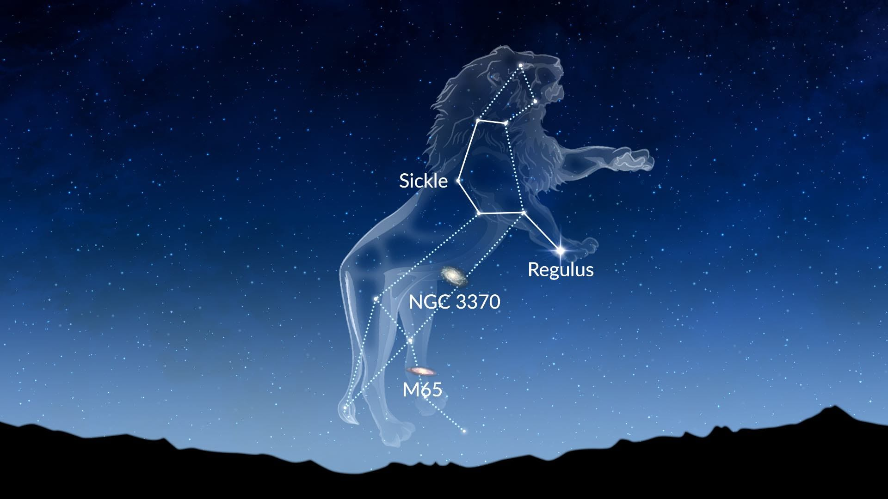

Leo (Constellations)
► The constellation of Leo is one of the easiest to spot over Earth inspiring both mythology and cutting-edge astronomy. ◄
► One of the most prominent constellations of the night sky, Leo the Lion is visible from pretty much anywhere on Earth, except for Antarctica. This means humanity has founded a wealth of myths and legends around the constellation. ◄
► Leo is the 12th largest of all the constellations and in terms of the night sky, taking up up an area of around 947 square degrees. The constellation is visible at latitudes between +90⁰nd -6⁵⁰. ◄
